一般クエスト Lv200～299
| ビガプール失踪事件 | |
|---|---|
ビガプール王国に失踪事件が2件発生した。まずビガプール警備長の話をよく聞いてみよう。 志願兵ウィリアムを助けに行こう。ウィルリアムはビガプール警備長によると実力はあるが、若干落ち着きが無く、失敗も多いと言う。最後に彼を見たのは、ガディウス大砂漠 / リンケン北部地域の傭兵達の墓の近くだと言う。おそらく傭兵達の墓に入ったようだ。傭兵達の墓を捜索してみよう。 神聖都市アウグスタでビガプールまで来る途中、行方不明になった神父を探す仕事を任された。最後に見た場所は鉄の道 / 道の中間地点にある、やぶ森の中だと言う。この一帯を捜索してみよう。まずやぶ森の広い地域から捜索してみた方が良さそうだ。 志願兵ウィリアムを見つけた。新興王国ビガプールの警備隊長にこの事実を報告しよう。 ガディオン神父を見つけた。新興王国ビガプールの警備隊長にこの事実を報告しよう。 |
|
| 受諾場所 | 新興王国ビガプール ビガプール警備長(88.113) |
| 受諾条件 | Lv200 |
| 報酬 | [選択肢] 経験値15万 + [選択肢] 経験値15万 |
| 新興王国ビガプール | ビガプール警備長へ [選択肢1]失踪した志願兵たちを探してみます。 → 魔法傭兵の墓 Ｂ１へ [選択肢2]失踪した神父様たちを探してみます。 → やぶ森の中へ |
| 魔法傭兵の墓 Ｂ１ | [選択肢1]失踪した志願兵たちを探してみます。 を選択した場合の続き 志願兵ウィリアム(75.23)へ |
| やぶ森の中 | [選択肢2]失踪した神父様たちを探してみます。 を選択した場合の続き ガディオン神父(73.32)へ、やぶドーナツとドーナツ外周を広範囲に移動。 |
| 新興王国ビガプール | ビガプール警備長へ 片方クリアすると、もう片方も受けるか選択できる。どちらから先に受けても可。 |
| 救出：1回目 | |
|---|---|
名も無い崩れた塔 １Ｆでガルトスの足を治療することができるデスピンサーの青い血 1個を手に入れてこよう。 ガルトスの足を治療することができるデスピンサーの青い血を手に入れた。名も無い崩れた塔 １Ｆにいるガルトスのところに戻ろう。 名も無い崩れた塔 ２Ｆに行って、行方不明になったレイナを捜し出そう。 レイナが、ウィーブウィドウの毒で危険な状態だ。毒は毒で治療するらしい。名も無い崩れた塔 １Ｆで食人スコーピオンの毒針 10個を手に入れよう。 レイナを治療してくれる食人スコーピオンの毒針を必要な分だけ手に入れた。名も無い崩れた塔 ２Ｆにいるレイナのところに戻ろう。 レイナが、ガルトスから薬をもらって来てほしいという。ガルトスは、名も無い崩れた塔 １Ｆにいる。 |
|
| 受諾場所 | 名も無い崩れた塔 １Ｆ ガルトス(12.74) |
| 受諾条件 | Lv200 |
| 報酬 | 経験値118万 |
| 名も無い崩れた塔 １Ｆ | 連作クエスト 救出：1回目 → 救出：2回目 デスピンサー(Lv210)を倒す ガルトスへ |
| 名も無い崩れた塔 ２Ｆ | レイナ(46.61)へ |
| 名も無い崩れた塔 １Ｆ | 食人スコーピオン(Lv200)を倒す |
| 名も無い崩れた塔 ２Ｆ | レイナへ |
| 名も無い崩れた塔 １Ｆ | ガルトスへ |
| 救出：2回目 | |
|---|---|
レイナが、ウィーブウィドウの毒で危険な状態だ。名も無い崩れた塔 ２Ｆで、レイナを治療することができるソードスパイダーの緑の血を1個手に入れよう。 名も無い崩れた塔 ２Ｆにいるレイナに、ソードスパイダーの緑の血を渡そう。 レイナを安心させなければならない。名も無い崩れた塔 ２Ｆで、ソードスパイダーの爪 50個、ウィーブウィドウの爪 10個、デスピンサーの爪 50個を手に入れてこよう。 すべての爪を手に入れた。名も無い塔 ２Ｆにいるレイナのところに戻ろう。 名も無い崩れた塔 １Ｆにいるガルトスに、レイナの話を伝えよう。 |
|
| 受諾場所 | 名も無い崩れた塔 １Ｆ ガルトス(12.74) |
| 受諾条件 | Lv200 |
| 報酬 | 経験値203万 |
| 名も無い崩れた塔 ２Ｆ | 連作クエスト 救出：1回目 → 救出：2回目 ソードスパイダー(Lv220)を倒す レイナ(46.61)へ ソードスパイダー(Lv220)、ウィーブウィドウ (Lv210)、デスピンサー(Lv220)を倒す レイナへ |
| 名も無い崩れた塔 １Ｆ | ガルトスへ |
| ハスナンの詩 | |
|---|---|
港街ブリッジヘッドのハスナンはオアシス都市アリアン付近のリンケンにいる自分の妹 ハルウィンの安否を知りたがっている。 砂漠村リンケンのハルウィンが頼んだ万能鍵を探してこよう。 砂漠村リンケンのハルウィンが頼んだクラウンワンドを探してこよう。 オアシス都市アリアンの地下にある遺跡地の地下２階でハルウィンが頼んだクローラーの粘液を採集してこよう。 ハルウィンの安否が書かれた手紙をブリッジヘッドのハスナンに届けよう。 ‘異教徒の魔法の杖が神の意志で万能の鍵となりて闇の中深き所を叩くなり、神の意志に従い汝に隠された道を開く。’詩を良く読んでみてください。もしあなたに幸運が付いていれば私が目撃した、あの場所に行けるはずです。 ハスナンがくれたヒントを使って隠された地域を探そう。 - これ以上のクエストはないので、解決の後、キャンセルしてください。 |
|
| 受諾場所 | 港街ブリッジヘッド ハスナン(47.40) |
| 受諾条件 | Lv230 |
| 報酬 | 3万G 海の神殿 Ｂ４のシーテンプラーの湧き場所へのワープ |
| 砂漠村リンケン | ハルウィン(72.39)へ、万能鍵とクラウンワンドを渡す |
| アリアン遺跡 Ｂ２ | クローラー(Lv60)を倒す |
| 港街ブリッジヘッド | ハスナンへ |
| 海の神殿 Ｂ４ | 万能鍵、クラウンワンド、幸運のクローバを所持して海の神殿 Ｂ４のモンスターを倒すと、シーテンプラーの湧き場所へワープ。 クエストをクリアしていなくても可能。 |
| 海の妖精ネリイス | |
|---|---|
名も無い崩れた塔5階のマーブルガゴイルを退治して、黒魔術師の記章を30枚収集しよう。 シュトラセラトのブリスンに、収集した黒魔術師の記章を渡そう。 |
|
| 受諾場所 | 港街シュトラセラト ブリスン(14.139) |
| 受諾条件 | Lv250 |
| 報酬 | 経験値70万 |
| 名も無い崩れた塔 ５Ｆ | マーブルガゴイル(Lv250)を倒す |
| 港街シュトラセラト | ブリスンへ |
| 失踪 | |
|---|---|
名も無い崩れた塔 ５Ｆで、血のついた壁を捜査してみよう。 捜査の結果、誘拐事件であることが分かった。名も無い崩れた塔 ５Ｆにいるアマンに捜査結果を知らせよう。 最後の痕跡を捜査していたら骸骨剣士の足跡を発見した。名も無い崩れた塔 ６Ｆにいる骸骨剣士を調査しよう。 骸骨剣士を調査した結果、モンスター達が組織的に動く事実を突き止めた。名も無い崩れた塔 ５Ｆにいるアマンに知らせに行こう。 アマンとカマンが直接捜査するために、名も無い崩れた塔 ５Ｆにいるソーサラーが持って歩くフラッシュワンドを奪ってこよう。 フラッシュワンドをすべて集めた。名も無い崩れた塔 ５Ｆにいるアマンのところに戻ろう。 |
|
| 受諾場所 | 名も無い崩れた塔 ５Ｆ アマン(18.13) |
| 受諾条件 | Lv250 |
| 報酬 | 経験値235万 |
| 名も無い崩れた塔 ５Ｆ | 血痕6箇所をクリック (1)(15.58)→(2)(22.47)→ (3)(16.43)→(4)(17.36)→ (5)(21.23)→(6)(9.12)  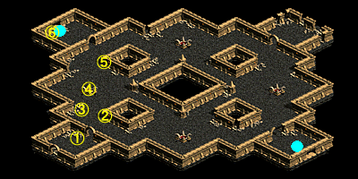 アマンへ |
| 名も無い崩れた塔 ６Ｆ | 骸骨剣士(Lv255)を倒す |
| 名も無い崩れた塔 ５Ｆ | アマンへ ソーサラー(Lv240)を倒す アマンへ |
| タワー補修作業 | |
|---|---|
傭兵団から名も無い崩れた塔の補修作業の指示を受けたアポロが、崩壊の危険がある場所の補修作業を手伝ってほしいという。大きいレンガ、小さいレンガを手に入れた後、名も無い崩れた塔 ７Ｆで亀裂が入った柱を探して補修しよう。 すべて補修した。名も無い崩れた塔 ７Ｆにいるアポロのところに戻ろう。 |
|
| 受諾場所 | 名も無い崩れた塔 ７Ｆ アポロ(53.49) |
| 受諾条件 | Lv255 |
| 報酬 | 経験値328万 |
| 名も無い崩れた塔 ７Ｆ | レンガを集めて柱を補修する。 柱1本につき、大きいレンガ1個と小さいレンガ1個を消費する。 レンガの入手に失敗すると、ダメージ100程度を受ける。 少し時間が経つと同じ場所を何度でもクリックできる。 ○大きいレンガ 20箇所 (6.26)(11.49)(12.20)(13.7)(19.41)(20.40)(22.26)(26.48)(28.47)(29.48)(31.14)(36.17)(46.40)(48.12)(50.27)(54.48)(56.22)(58.6)(59.12)(60.7) ○小さいレンガ 18箇所 (8.24)(12.6)(13.51)(14.48)(21.27)(31.17)(32.15)(38.49)(39.49)(41.50)(46.14)(47.42)(50.36)(51.28)(51.38)(54.7)(56.5)(56.49) ○柱 17箇所 (6.52)(16.26)(17.30)(21.20)(21.36)(26.16)(26.40)(30.12)(30.44)(36.11)(36.45)(40.15)(40.40)(45.21)(45.35)(49.24)(49.30) 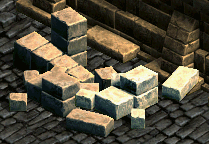 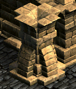 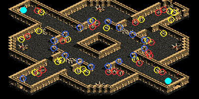 アポロへ |
| 敵をスパイせよ！ | ||||||||||||||||
|---|---|---|---|---|---|---|---|---|---|---|---|---|---|---|---|---|
ガーリンが、後発隊が来る前に名も無い崩れた塔 ９Ｆにいるモンスター軍の兵力がどれくらいか確認しておかなければいけないという。モンスターの数を把握して、ガーリンのところに戻ろう。ただし、情報の正確性によって報酬も変わってくるので慎重にやろう！ モンスター軍の兵力を調査していたら、奇妙な実験室を発見した。骸骨騎士を調べて調査しよう。ただし、死霊魔術師に見つからないように気をつけよう。見つかってしまうと攻撃を受けるだろう。 調査の結果、実験材料として人々を誘拐したという事実が分かった。名も無い崩れた塔 ９Ｆにいるガーリンに知らせよう。 ヤツらが何の実験をしていたのか、調べなければならない。名も無い崩れた塔 ９Ｆにある実験室から実験報告書を奪ってこよう。 実験報告書を手に入れた。名も無い崩れた塔 ９Ｆにいるガーリンに知らせよう。 |
||||||||||||||||
| 受諾場所 | 名も無い崩れた塔 ９Ｆ ガーリン(28.5) | |||||||||||||||
| 受諾条件 | Lv265 | |||||||||||||||
| 報酬 | 4問正解 経験値35万 3問正解 経験値30万 2問正解 経験値25万 1問正解 経験値20万8000 0問正解 経験値17万8000 |
|||||||||||||||
| 名も無い崩れた塔 ９Ｆ | ガーリンへ 解答3133 ※正解の解答は、実際の湧き数とは異なる。
骸骨騎士(Lv270)を倒す 闇の魔法師に見つかると、名も無い崩れた塔 １Ｆへワープさせられる。 ガーリンへ 机(13.8)をクリック 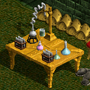 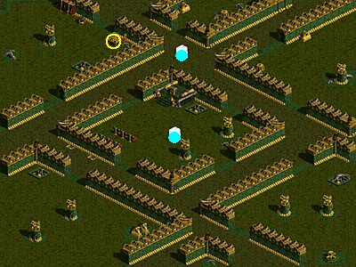 ガーリンへ |
|||||||||||||||
| 消えた王国(1) | |
|---|---|
魔法都市スマグのモーデンから不思議な石に関する情報を得よう。 荒廃都市ダメルのデンバーに、石に関する情報を伝えよう。 |
|
| 受諾場所 | 荒廃都市ダメル デンバー(35.45) |
| 受諾条件 | Lv270 |
| 報酬 | 経験値10万 |
| 魔法都市スマグ | 連作クエスト 消えた王国(1) → 消えた王国(2) → 遺物探索 モーデン(44.37)へ |
| 荒廃都市ダメル | デンバーへ |
| 消えた王国(2) | |
|---|---|
荒廃都市ダメルのデンバーは、石が示す方向の探査を頼もうとしている。彼に声をかけてみよう。 石から出る光はガディウス大砂漠/デフヒルズ北側方向を指し示している。そこで、光が導く先の遺跡を探索してみよう。 石から出る光は北フォーリンロード/ネイダック平原地帯の方を指し示している。そこで、光が導く先の遺跡を探索してみよう。 石から出る光は港町シュトラセラトを横切って海の方を指し示している。港の船員たちから、石が示す場所に関する情報を得よう。 荒廃都市ダメルのデンバーに、探索を通じて得た情報を伝えてあげよう。 |
|
| 受諾場所 | 荒廃都市ダメル デンバー(35.45) |
| 受諾条件 | Lv270 |
| 報酬 | 経験値20万 |
| 荒廃都市ダメル | 連作クエスト 消えた王国(1) → 消えた王国(2) → 遺物探索 デンバーへ |
| ガディウス大砂漠 / デフヒルズ北側 | 石像(113.112)をクリック 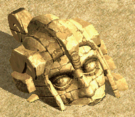 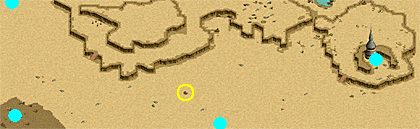 |
| 北フォーリンロード / ネイダック平原地帯 | 石像(66.80)をクリック 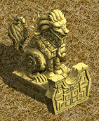 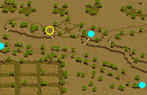 |
| 港街シュトラセラト | 船員(34.139)(55.142)へ、どちらでも可 |
| 荒廃都市ダメル | デンバーへ |
| 遺物探索 | |
|---|---|
モリネルタワー地上1階にいるカイトレーから不思議な石に関する情報を手に入れよう。 荒廃都市ダメルにいるデンバーに、カイトレーを通じて手に入れた情報を伝えよう。 名も無い崩れた塔9階の死霊魔術師を倒して、水晶の鍵を獲得しよう。 ガディウス大砂漠/デフヒルズ北側と北フォーリンロード/ネイダック平原地帯にある遺跡を探索して、古代の水晶のかけらを探し出そう。 荒廃都市ダメルのデンバーに、探索により手に入れた古代の水晶のかけらを渡そう。 |
|
| 受諾場所 | 荒廃都市ダメル デンバー(35.45) |
| 受諾条件 | Lv270 |
| 報酬 | 経験値180万 |
| モリネルタワー 地上１階 | 連作クエスト 消えた王国(1) → 消えた王国(2) → 遺物探索 カイトレー(157.115)へ |
| 荒廃都市ダメル | デンバーへ |
| 名も無い崩れた塔 ９Ｆ | 死霊魔術師(Lv270)を倒す |
| ガディウス大砂漠 / デフヒルズ北側 | 石像(113.112)をクリック |
| 北フォーリンロード / ネイダック平原地帯 | 石像(66.80)をクリック |
| 荒廃都市ダメル | デンバーへ |
| 裏切り | |
|---|---|
名も無い崩れた塔 Ｂ１でジャトが、たいまつに爆弾を設置した。名も無い崩れた塔 Ｂ１のたいまつに小型魔法時限爆弾 40個を10分以内に設置しよう。 ミッションに失敗した。名も無い崩れた塔 Ｂ１にいるレイクの所に戻ってやり直そう。 ジャトが設置した魔法爆弾があるすべての場所に小型魔法時限爆弾を設置した。名も無い崩れた塔 Ｂ１にいるレイクのところに戻ろう。 ジャトが、レイクがのところに来る。レイクの右側にある石に、魔法爆弾を設置して名も無い崩れた塔 Ｂ２に下りる入口にある箱に起爆装置を連結しよう。そして次に、レイクのところに戻って、いつ爆発させるか話し合おう。 設置が完了した。名も無い崩れた塔 Ｂ１にいるレイクのところに戻って、話し合った後、レイクが名も無い崩れた塔 Ｂ２に下りる入口にある箱と連結した起爆装置の起動合図があったらスイッチを押そう。 ミッションに失敗した。名も無い崩れた塔 Ｂ１にいるレイクのところに戻ってやり直そう。 |
|
| 受諾場所 | 名も無い崩れた塔 Ｂ１ レイク(55.65) |
| 受諾条件 | Lv290 |
| 報酬 | 経験値36万8000 |
| 名も無い崩れた塔 Ｂ１ | 10分以内にたいまつをクリック (4.8)(4.60)(6.34)(6.50)(8.3)(17.3)(18.20)(19.42)(21.34)(21.53)(23.24)(24.32)(24.45)(26.50)(27.14)(28.61)(30.18)(31.59)(36.59)(37.19)(40.2)(41.63)(47.2)(47.63)(48.15)(50.18)(56.20)(56.59)(59.62)(60.16)(61.49)(63.25)(63.31)(64.45)(65.53)(66.34)(67.22)(81.33)(81.49)(82.59) の40箇所あるが、少し時間が経つと何度でもクリックできる。 制限時間を過ぎると、レイクに戻ってやり直しになる。 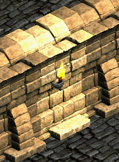 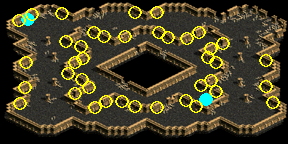 レイクへ 石(49.66)と箱(62.56)をクリック 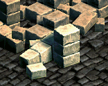 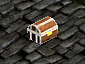 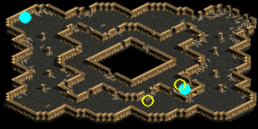 レイクへ 10秒以内に箱(62.56)をクリック 制限時間を過ぎると、レイクに戻ってやり直しになる。 |
[参考] Yotsuba Quest DataBase